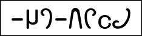

|
夕月書体
夕月書体は2010年ごろまで使われた古い書体です。
それ以降は幻京書体を使用しています。
可読性はarkantisを基準にしています。
二次創作でのご利用は幻京書体をお使いください。せっかく作っても何の事だか分からなくなる恐れがあります。
概要中の和名はセレンによるものです。
nias氏のフォントが含まれています。ご本家はこちらになります。
●arkantis

概要：夕月標準文字。線に強弱があり、手書き感がある
可読性：良
用途：汎用。何にでも使える
●axet
概要：筆記文字。流麗な手書き風筆記体
可読性：悪
用途：流暢で上品な口調の表現、元素記号など化学に関する表記、飾り文字などに
●miil
概要：舞紐文字。いわゆるイタリック。女性的に洗練されたイメージがある
可読性：良
用途：ルティア語など外国語の表記、メニューなどの装飾文字に
●flia
概要：水晶文字。いわゆるゴシック。男性的に洗練されたイメージがある。密なので少ないスペースで書ける
可読性：並
用途：豪華絢爛なイメージに、sm,rd風の中世的なイメージに、威厳あるイメージに
●yula

概要：魂文字、死神文字。魂のようにうねった文字
可読性：並
用途：ゆらゆらした感じのものや、幽霊などに
●inje

概要：三日月文字。特に大文字部は月の形になっている
可読性：良
用途：星、天体、月、夜などのテーマに
●gift

概要：針金文字。針金を折り曲げて作ったかのような文字
可読性：良
用途：やや丸っこくいので、やや女性的。汎用性がある
●mana

概要：少女文字。arkantisを丸くしたもの
可読性：良
用途：柔らかい、可愛い、女らしさなどの表現に
●fian

概要：幼女文字。幼い子供が書くような小さくて丸い可愛らしい文字
可読性：悪
用途：可愛い、幼い、弱い、儚い、小さいなどの表現に
●hardin

概要：魔女文字。おどろおどろしい文字。ギザギザを多様。d,gは錬金術のクリスタルをイメージ
可読性：並
用途：恐怖、怒り、不安、不思議、魔法などの表現に
●ark
概要：呪文文字。どの文字も始点の高さが揃うため、結果的に目が上下に行って読みづらい
可読性：悪
用途：よくわからない外国語、聞き取れない呟き、呪文などに用いる
●reb

概要：結球文字。横線の端点に結球がある直線的な文字
可読性：並
用途：やや無機質なイメージ。機械的で簡素なイメージ
●tela
概要：電卓文字。電卓の表示板に表示されたかのような直線的な文字
可読性：並
用途：rebよりさらに機械的なイメージ
●teatl

概要：刻印文字。幻字の元の形が想起しにくい装飾に特化した文字
可読性：悪
用途：指輪などの刻印や古地図などの表記に。古典を彷彿させる
●yufu

概要：電算文字。ビットで表現した文字
可読性：良
用途：veleiのころのコンピュータの表現に、レトロゲームの表現に
●dion

概要：鋸刃文字。ノコギリで書いたようなギザギザ文字。線と線の交点が必ず９０度にならない
可読性：並
用途：驚き、恐怖、意外などの表現に
●dien
概要：画面文字。PCの画面に表示したときに、ビットマップなしでもジャギーがなく表示されるよう作られたもの
可読性：並
用途：初期のコンピュータなど、レトロで低水準なものの表現に
|